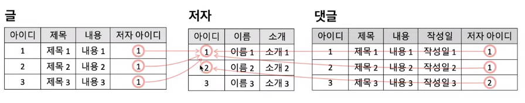
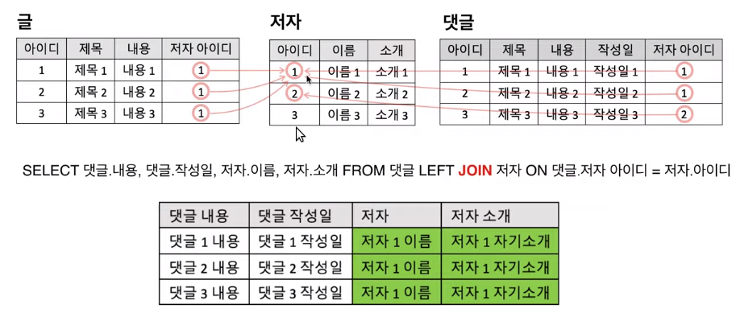
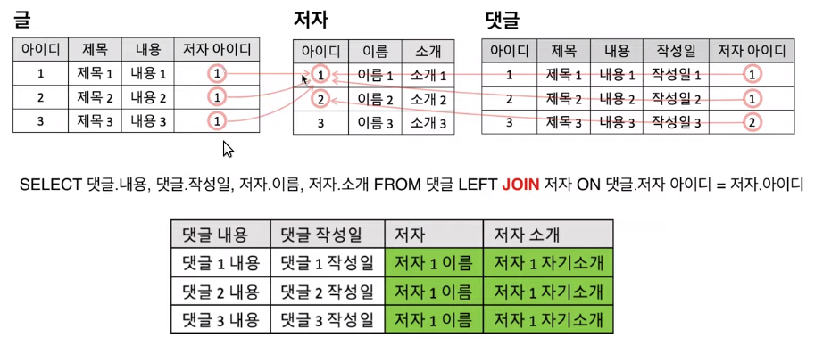
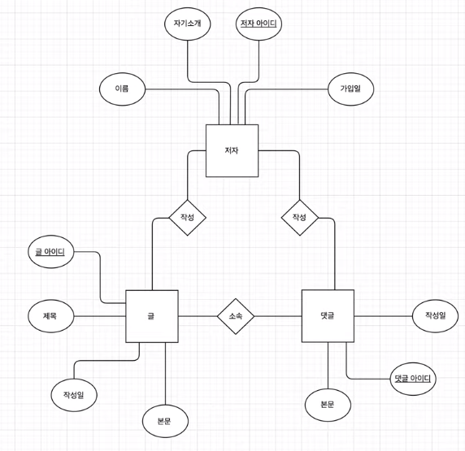

This is personal study note
Copyright and original reference are from:
https://www.youtube.com/watch?v=wd-hcHHnNBY&list=PLuHgQVnccGMDF6rHsY9qMuJMd295Yk4sa
================================================================================
What will "relationship in ERD" become eventually?
================================================================================

You can see 3 tables
3 tables are connected by data
================================================================================
PK identifies "row"

================================================================================
"Author table id values" in "Text table" (which are used to indicate "id value" of "Author table")
are called as "foreign key" (from the standpoint of "Author table")
because even if "Author table id values" are the data which is originally involved in "Author table"
but "Author table id values" are involved in "Text table" to make relationship between "Author table" and "Text table"
FK is used to connect to other table, being located in foreign table (from the standpoint of original table)

================================================================================
In conclusion, the relationships in RDB are implemented by connection of PK and FK
================================================================================
The relationship is represented by diamonds in ERD
"Text" is written by "Author" (see "writing relationship" between "Text" and "Author")
"Reply" is written by "Author" (see "writing relationship" between "Reply" and "Author")
"Reply" is involved in "Text" (see "involving relationship" between "Reply" and "Text")
